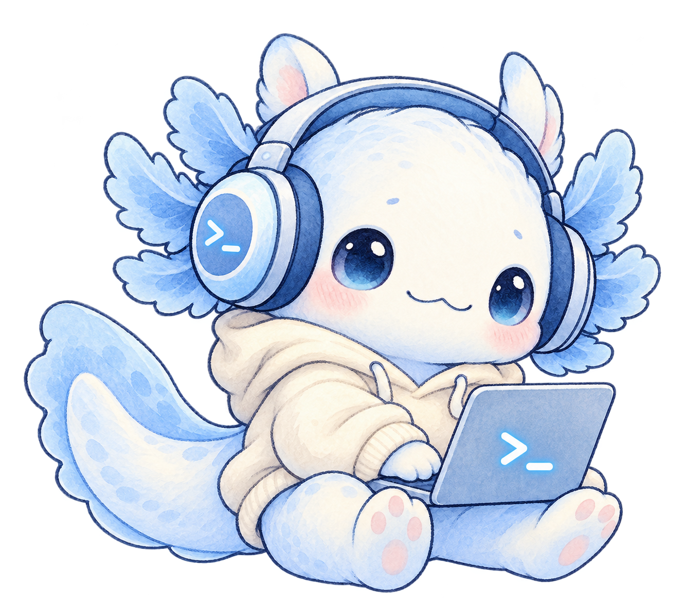

misterwhite.top
мой первый проект — уже можно открыть и посмотреть.
посмотретьПодборка личных проектов и небольших экспериментов.

come in, come in...
Здесь постепенно появляются новые проекты и материалы.
мои первые работы
01—03мой первый проект — уже можно открыть и посмотреть.
посмотретьКомпактный Windows-скриншотер.
посмотретьместо для следующей классной идеи.
найти меня